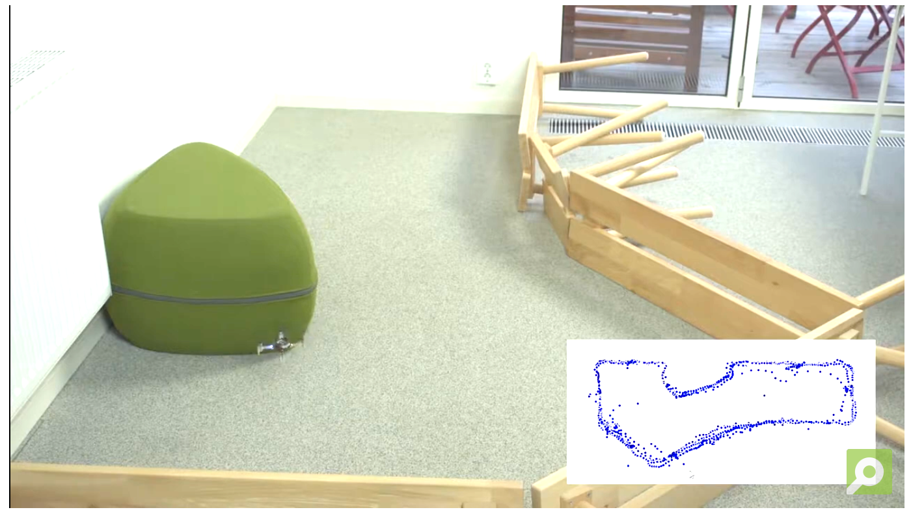
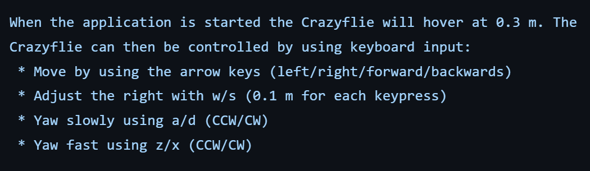
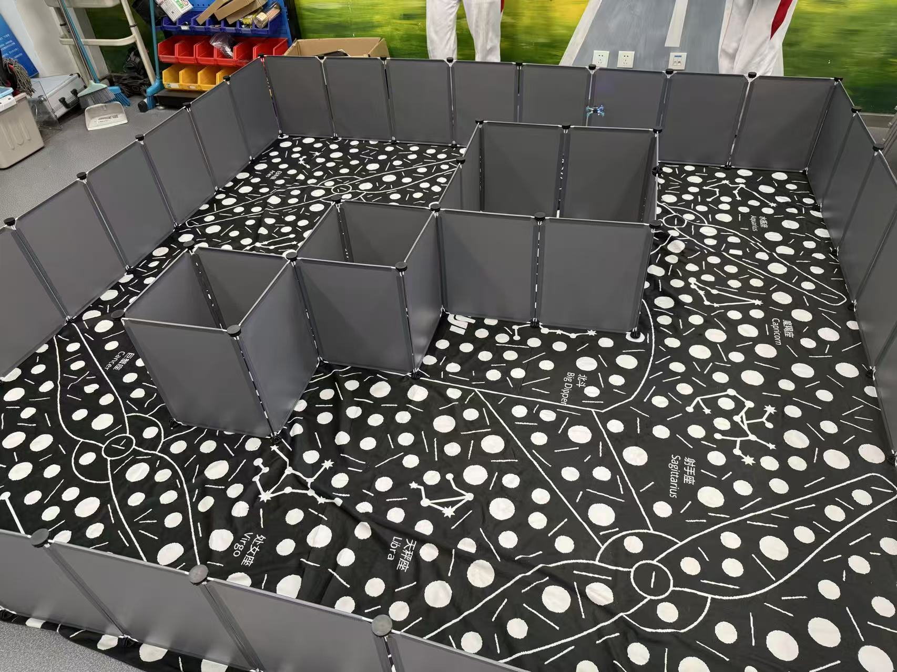
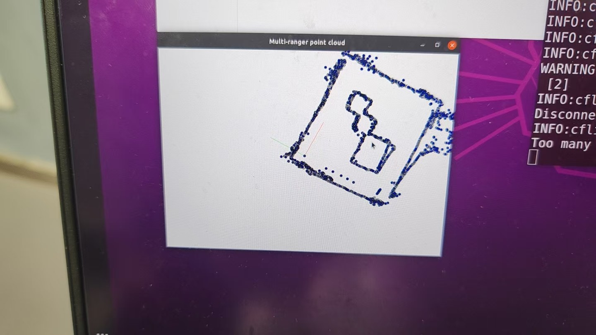

实验 6: 复杂地图飞行与建图
Complex-map Flight and Mapping
运行前确认小组 URI
本实验的 Python 脚本统一从环境变量 CFLIB_URI 读取实验 3 中分配的完整 radio URI，不需要把小组地址重复写入每个代码文件。打开新终端后先执行：
echo "$CFLIB_URI"输出必须与本组标签上的完整 URI 完全一致，包括接口编号、channel、速率和 address。若输出为空或不正确，请返回实验 3 的“将完整 URI 保存到虚拟机”步骤重新设置；确认无误后再运行本实验脚本。
一、实验目标
继续熟悉cflib库中multiranger传感器相关的编程方法。
使用multiranger传感器实现更多有趣的飞行任务
二、实验准备
之前已经配置好连接到无人机的客户端的虚拟机系统。并且需要具备前几门实验已经积累的linux系统操作经验。再需要一点的python编程基础。
本实验中需要用到的硬件设备：
- Crazyflie 2.0
- Crazyradio PA
- Flow deck
- Multiranger deck
三、实验步骤
本次实验将主要进行python脚本的运行，编程库参考资料可直接打开 Bitcraze cflib User Guides：
https://www.bitcraze.io/documentation/repository/crazyflie-lib-python/master/user-guides/若在进行实验中遇到困难，可直接打开上述网址进一步参考。同时部分操作和知识要点也在上节课的实验手册中有提及，如有不会的地方可以再参考上节的实验手册，这部分操作这节实验手册不再赘述。
实验一：沿墙飞行
该实验为上节课的拓展实验，现在给出代码中可以调节的参数，同学们可以再修改参数试验一下运行的效果。
算法来源与课堂代码
沿墙状态机参考 Bitcraze 官方 crazyflie-demos 仓库。官方示例面向一般直墙环境，默认离墙距离和速度不适用于本课程约 40-50 cm 宽的通道；本手册提供经过窄通道参数调整、测距去抖和运行时限保护的课堂版本。
将两个课堂文件放在虚拟机的同一个 ~/workspace 目录中。--wall-side left 表示飞行时墙保持在无人机左侧；如需沿右墙飞行，改为 --wall-side right。
cd ~/workspace
echo "$CFLIB_URI"
python3 multiranger_wall_following.py --wall-side left --max-time 90课堂参数为：参考离墙距离 0.18 m、前方转向距离 0.24 m、最大前进速度 0.08 m/s、最大侧向修正速度 0.035 m/s。侧面读数必须连续显示为远距离 0.80 s 后才判定墙体结束，以抑制挡板接缝或短暂丢帧造成的误转向。前方小于 0.14 m、任一侧小于 0.09 m、上方小于 0.15 m 或达到最长飞行时间时，脚本停止运动并退出 MotionCommander 以执行降落。
首次测试
先拆除复杂障碍，在低速直墙环境验证左右方向、悬停和上方手势停止；确认无误后再进入窄通道。代码中的阈值以传感器测得距离为准，不等同于机身外缘到墙面的实际净空。
实验二：更多方案的避障飞行
现在大家已经能熟练掌握光流传感器和避障传感器的使用方法了，接下来按照下图所示的障碍地图环境，让无人机从A区域起飞，整个流程中无人机的飞行高度不要超过0.4m，探索整个地图，也就是一路飞行不要碰撞到墙壁，直到在B区域内降落。现在同学们已经掌握了motioncommander和multiranger的编程方法，想一想，这样的地图环境用什么样的编程方式，从逻辑上可以更高效地完成这个事先已知的地图环境中的固定飞行路线任务。
注意，这个实验的内容会和最终考核的部分内容有关联，这个实验希望提升和检验同学们编程的熟练度，以及如果用更巧妙的代码逻辑来实现这类任务，则会使大家的实践考核结果锦上添花。

实验三：手动控制飞行建图
算法来源与课堂手动建图脚本
点云坐标变换和可视化参考 Bitcraze 官方 multiranger_pointcloud.py。课堂运行使用增加了受控降落、最长飞行时间、日志超时和方向测距保护的版本；官方文件保留为源码参考，不直接作为正式飞行入口。
将课堂脚本放入 ~/workspace 后运行：
cd ~/workspace
echo "$CFLIB_URI"
python3 manual_multiranger_pointcloud.py方向键控制前、后、左、右平移，A/D 控制低速偏航；课堂版固定飞行高度，不再通过按键修改高度。按 Esc、关闭窗口、上方手势停止、日志超时或达到 90 秒上限时，脚本退出 MotionCommander 并降落。某一运动方向小于 0.18 m 时，该方向的平移指令会被抑制。

运行后，使用方向键控制前、后、左、右平移，使用 A/D 低速调整航向。飞行高度固定为 0.35 m；松开按键后对应速度立即归零。建图时保持低速，并持续对照现场障碍与点云轮廓。

现在运行这个程序，对这节课的地图障碍构建出一个清晰的点云地图。
建图结果参考
复盘建图实验时，可将现场场地结构与点云输出进行对照，重点检查外边界、内部挡板和异常散点。


飞行过程记录
飞行视频用于记录采样路径与障碍关系，便于与建图结果交叉核验。